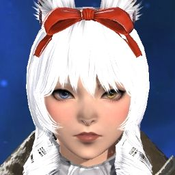

Azariah Hoshino
Social Media Manager
Joined on January 29, 2025

In charge of social and kofi management. Aza manages the Free Company's social media presence and serves as the group's photographer, capturing the best moments and showcasing the FC’s adventures to the wider community. Whether it’s posting event highlights, sharing recruitment messages, or maintaining an engaging online presence, Azariah ensures that the FC stays visible and active. Additionally, they handle the Kofi setup, providing a way for members to support the FC’s activities and growth.
Vampy Akuma & Dark Slumber
Social Event Planner
Joined on January 29, 2025

Vampy bring energy and excitement to the Free Company through expertly planned social events. From seasonal festivals to casual gatherings, they create experiences that strengthen the bonds between members. Their creativity and organizational skills ensure that the FC is always buzzing with activity, making it a fun and lively place for everyone.
Tsuki Hoshino
Feedback Collector
Joined on January 29, 2025

Plays a crucial role in gathering valuable feedback for the Free Company by conducting exit interviews and ensuring that members' voices are heard. By understanding why players leave and collecting suggestions for improvement, Tsuki helps refine the FC’s structure, policies, and overall experience. Their efforts ensure that the FC continues to grow and evolve based on real member experiences.
Zetasa Suizahara
Treasurer
Joined on January 29, 2025
Zetasa manages the Free Company's finances with precision, ensuring that resources are allocated effectively. From budgeting for FC buffs and housing upgrades to handling gil reserves for events, Zetasa keeps the economy stable and ensures the FC has what it needs to thrive.
Vanatorl Axton
Notices and Updates
Joined on January 29, 2025

Vanatorl is responsible for keeping everyone informed with notices and updates. Whether it’s sharing important FC policies, event reminders, or game patch notes, they ensure that all members stay up to date. Their efforts help maintain clear communication and ensure that no one misses out on important information.
Lysithea Gracefeel
Farm Group Organizer
Joined on January 29, 2025
Lysithea leads the charge in organizing mount farming events, helping members collect some of the most sought-after mounts in Final Fantasy XIV. Whether it’s coordinating primal fights, extreme trials, or other farming runs, Lysithea ensures that players can efficiently work together to obtain their desired mounts. Their leadership helps create a fun and rewarding experience for everyone involved.
Mogumi Kupoyumi
Kupo Supreme
Joined on January 29, 2025

When most adventurers picture a moogle, they think of small, fluffy creatures bouncing through the air with their signature pom-poms, delivering letters and getting into mischief. But in this Free Company, Mogumi shatters all expectations—because this moogle isn’t just a leader, he’s an absolute unit. Towering over his kin with an awe-inspiring physique, Mogumi is a big, muscled moogle who commands respect, whether it’s on the battlefield or at the FC’s grand feasts. But make no mistake—behind those rippling biceps and mighty wings lies the heart of a true leader, guiding the Free Company with wisdom, strength, and an occasional flex for emphasis.